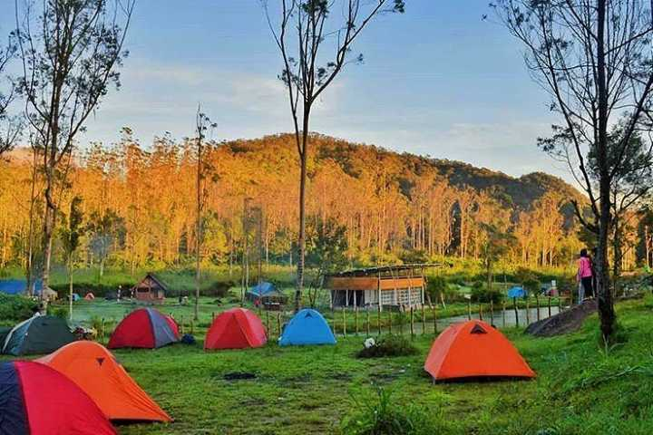
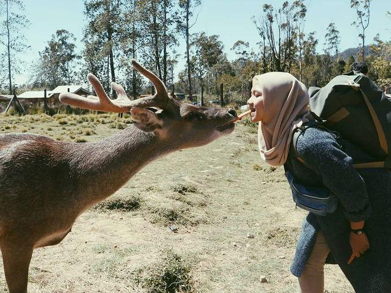
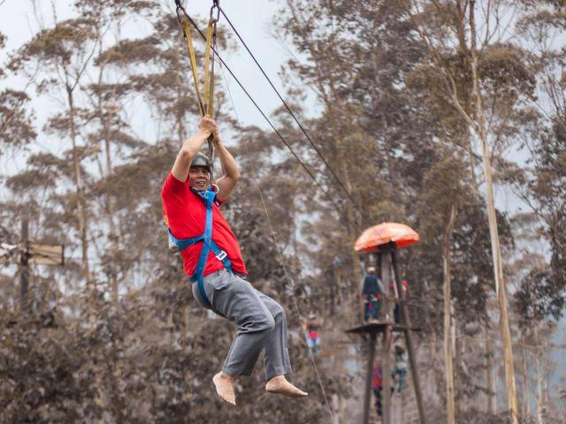
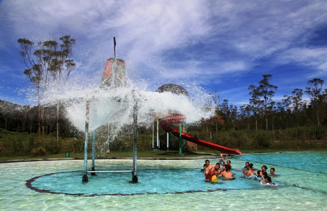

Daya tarik wisata pertama yang ditawarkan oleh Ranca Upas Ciwidey adalah suguhan pesona keindahan alam dataran tingginya yang masih alami berudara sejuk,hal tersebut beralasan karena kawasan wisata alam di ciwidey bandung selatan yang difungsikan sebagai kawasan wisata hutan lindung ini berada terletak di atas ketinggian 1.700 mdpl.Ranca Upas selama ini dijadikan sebagai pusat konservasi flora dan fauna langka,di tempat wisata alam ini tumbuh subur dan sekaligus dijaga kelestariannya untuk berbagai tanaman langka.
Harga Tiket Ranca Upas
| Tiket Wisatawan Lokal | Rp.20.000 |
| Kemping Wisatawan Lokal | Rp.30.000 |
| Tiket Wisatawan Mancanegara | Rp.40.000 |
| Kemping Wisatawan Mancanegara | Rp.50.000 |
| Kolam Renang | Rp.20.000 |
| Prewedding | Rp.500.000 |
| Parkir Motor | Rp.5000 |
| Parkir Mobil | Rp.10.000 |
| Parkir bus | Rp.25.000 |
| Sewa Tenda | Rp.200.000-700.000 |
Jam buka Ranca Upas Ciwidey
Kawasan wisata dan bumi perkemahan ini dibuka 24 jam setiap hari.DAYA TARIK RANCA UPAS
1. Kegiatan Berkemah / Camping
Salah satu aktivitas yang bisa dilakukan adalah berkemah. Aktivitas yang sesuai dengan peruntukan tempat wisata ini yaitu sebagai bumi perkemahan. Semua orang bisa menikmati suasana berkemah tanpa dibatasi usia atau status sosial.Lokasi berkemah di sini sendiri memiliki area yang sangat luas hingga mampu menampung banyak peserta. Karena itu, tempat ini sering dijadikan tempat jambore tingkat nasional berbagai organisasi di Indonesia. Selain itu, suasana alam yang masih terlindungi menjadi daya tarik sendiri untuk berkemah.Bagi pengunjung yang tidak membawa alat-alat berkemah, di tempat ini juga disediakan penyewaan. Berbagai macam alat berkemah yang dibutuhkan disediakan di sini, mulai dari tenda hingga sleeping bag. Dengan sewa harga yang bersaing, rasanya cukup untuk pengalaman yang luar biasa di Ranca Upas Ciwidey.
2. Berinteraksi Di Penangkaran Rusa
Tidak hanya berkemah yang bisa pengunjung lakukan. Pengunjung bisa berinteraksi dengan rusa di penangkaran rusa yang ada di dalam kawasan wisata. Berinteraksi memberi makanan dan berfoto dengannya.Di lokasi penangkaran rusa ini, pengunjung dan rusa tidak dibatasi oleh pagar, tapi langsung turun ke habitatnya. Ditemani pawangnya, pengunjung dapat memberi makan yang sebelumnya dibeli di counter yang tersedia. Biasanya makan yang dijual untuk makanan rusa adalah wortel yang sudah diikat.
3. Kegiatan Out Bond
Aktivitas selanjutnya yang bisa dilakukan di Ranca Upas Ciwidey adalah aktivitas out Bond. Hal ini adalah bagian dari inovasi yang dilakukan pengelola untuk bersaing dengan tempat lainnya. Dengan latar alam yang terbuka dan alami, aktivitas out Bond di sini sangatlah menyenangkan dan seru.Permainan-permainan yang bisa dilakukan di sini adalah flying fox, Elvis bridge, jembatan goyang dan lain-lain. Fasilitas out Bond ini bisa dimanfaatkan untuk gathering perusahaan atau sekolah. Keseruan dan pembangunan tim bisa dilakukan dengan mudah di arena out Bond.
4. Waterboom Dan Kolam Renang Air Panas
Pengelola kawasan wisata terus berinovasi dengan menghadirkan wahana baru. Salah satu wahana yang terbaru adalah water boom-nya. Bermain air di kolam renang dan water boom Ranca Upas Ciwidey memiliki suasana yang berbeda, hal ini karena suhu udara yang dingin.Satu lagi fasilitas yang bisa dinikmati pengunjung adalah kolam pemandian air panas kampung cai. Berendam air panas di cuaca yang dingin tentunya sangat cocok dilakukan. Idealnya, setelah bermain air di kolam renang dan water boom pengunjung memulihkan suhu tubuhnya dengan berendam di air panas.
Lokasi Bumi Perkemahan Ranca Upas Ciwidey
Kawasan wisata ini berlokasi di Jl. Raya Ciwidey-Patengan No.KM. 11, Patengan, Rancabali, Bandung, Jawa Barat 40973. Berjarak kurang lebih 45 KM dari pusat kota Bandung. Bisa ditempuh dalam waktu 1,5 Jam berkendara melewati jalan tol Soreang.